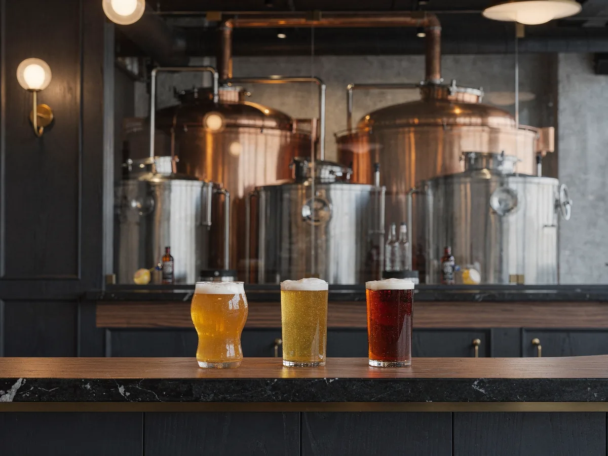
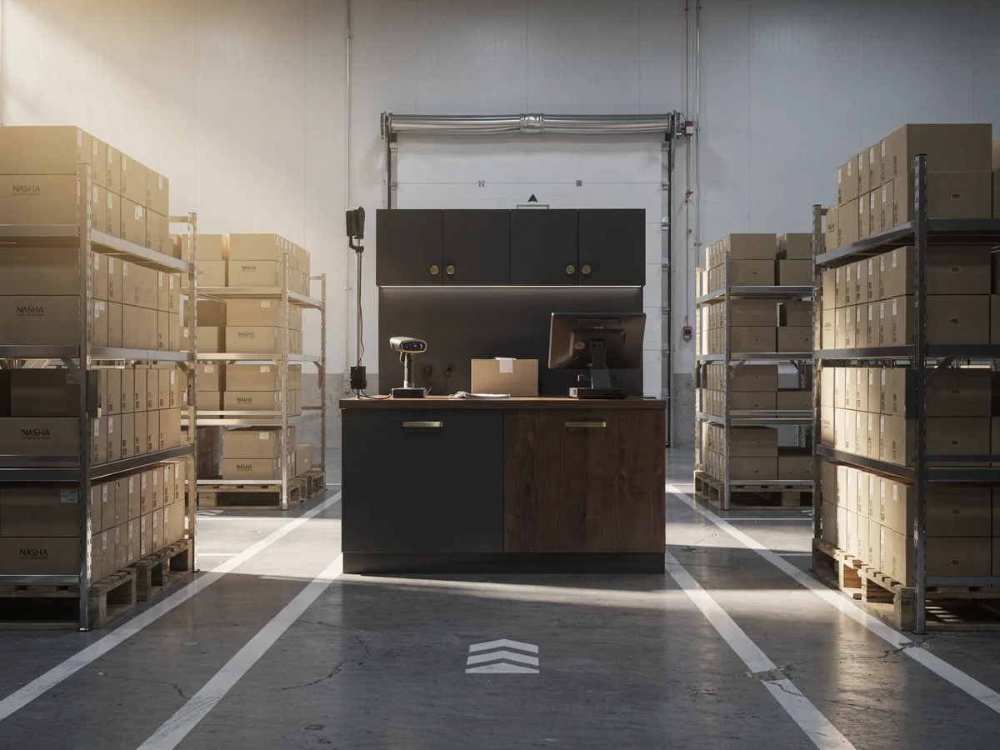
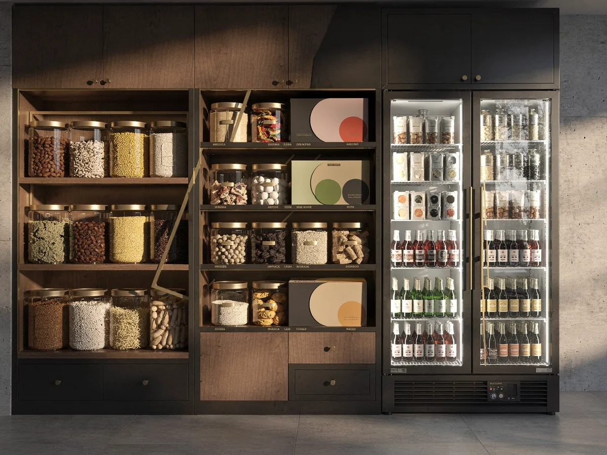
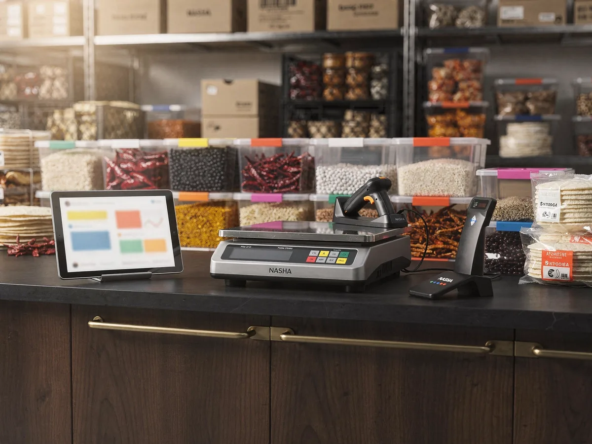

Discover and specify
Problem: stock uncertainty and approval bottlenecks. Requirements: explicit review, consistent units, refusal during outages and reproducible outcomes. Acceptance: a balanced three-day ledger and one stock update per request.
NASHA · independent engineering project
A functional browser lab for inventory, authorization, and recovery.
SIMULATION · Synthetic business and inventory. Role switching demonstrates a policy; it does not authenticate separate people. No orders leave this browser. Refresh starts a new isolated session.

02 / THE BUSINESS WORLD · AI CONCEPT
NASHA is an independent Indo-Mex brewery and restaurant concept. Explore the operational questions behind the hospitality: what to stock, who can approve, and how to recover safely.
Fictional business · approved concept imagery · synthetic operations. No commercial availability, finalized menu pricing or live autonomous services.
Follow a day inside NASHA AI ↓03 / ONE SCENARIO · THREE PERSPECTIVES
Original isolated control fixture; the expanded shared living mission appears above. A demand surge. An ingredient shortage. A human decision. An interrupted delivery. Explore the same controlled workflow through business, AI systems and engineering.
Isolated deterministic browser exercise using the existing inventory model. No model inference or external orders. Agent names describe functional roles, not autonomous execution. This scenario does not change the inventory workspace below.
Operate the full inventory workspace · Inspect integration evidence · Inspect governed agent evidence
THE FOUNDER’S VISION / NASHA INDO-MEX
NASHA began as a founder-led vision for an Indo-Mex brewery and hospitality experience. Indian and Mexican influences meet an Austin-inspired courtyard, warm stone, terracotta, dark timber and copper. NASHA AI Universe explores the systems that could support a business like it.
PROPOSED BUSINESS · ORIGINAL PROCEDURAL ARCHITECTURAL STUDY · Not an operating location, a photograph, a construction plan or a regulatory approval. Existing approved food and brewery imagery remains separately labeled. No premises, equipment, customers or revenue are claimed.
Founder vision → business design → operational requirements → engineering → synthetic validation.
See the living inventory mission · Enter the AI headquarters · Meet the engineer
Twelve departments · one inspectable workspace
Working browser exercises and connected operational controls. All business data is synthetic. This console uses local deterministic logic; the separately documented Python workflows are not hosted APIs.
Recorded local evidence: 57 API/control tests and 8 retrieval development fixtures. These counts do not imply production readiness or completion of all 200 concepts.
NASHA Indo-Mex · fictional business
Follow a product from stock decision to independent review, recovery and an auditable result. Every image is an AI-generated concept, not actual NASHA photography.



Three-day demand uses a deterministic daily-rate heuristic. It has no trained forecast model or calibrated confidence interval. Stock values use synthetic unit costs in cents.
Session ready.
| Product | Category | On hand | Forecast | Shelf life | Shortfall | Value | Actions |
|---|
Operator proposes → reviewer approves → operator receives. Retry after recovery keeps the same request key.
Submit a physical count, then switch to reviewer to reconcile. Counts become stale if stock changes. Shelf life is a synthetic assumption in days from this session’s fixed simulation day zero, not a live expiry feed.
These are the existing headquarters agents. The approved character concepts are 2D illustrations with CSS state presentation, not rigged 3D models. The state shown here records browser actions in this simulation; it does not indicate autonomous or live model activity.
Professional employment is distinguished from independent projects. Apple Maps is a client engagement, not direct Apple employment. Public copies omit the phone number.
Select a stage to inspect its implementation boundary.
No external action is taken by this browser demonstration.
Browser controls → validated pure state transition → stock and approval ledger → SHA-256 chained event log → derived report. State lives in memory per page. The audit detects edits within a trusted session; a browser user can rewrite code or recompute it. Production needs server identity, durable storage, transactional authorization and independent monitoring.
Explore the established enterprise demo · Explore the recorded 3D headquarters
FORWARD-DEPLOYED ENGINEERING / INDEPENDENT PROJECT
NASHA demonstrates transferable capabilities, not a claimed professional Forward-Deployed Engineer job title.
Problem: stock uncertainty and approval bottlenecks. Requirements: explicit review, consistent units, refusal during outages and reproducible outcomes. Acceptance: a balanced three-day ledger and one stock update per request.
The public state engine runs JavaScript over typed inputs and the existing pure inventory model. Session replay, input validation, role checks and idempotent receipt are executable. Python/FastAPI/SQL local-project evidence remains separately documented, not hosted by this page.
Inspect actual scenario sourceObserved deterministic inputs/outputs, event hashes, ledger checks and refusal cases are visible. Retrieval, evaluation and integration case studies state their methodology and limits. No simulated result is presented as commercial impact.
Controlled agent evidence · Grounded retrieval evidence